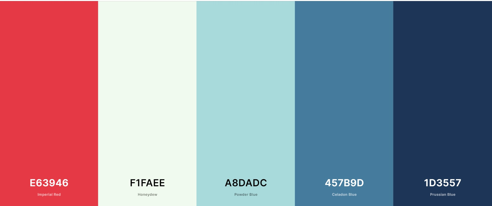
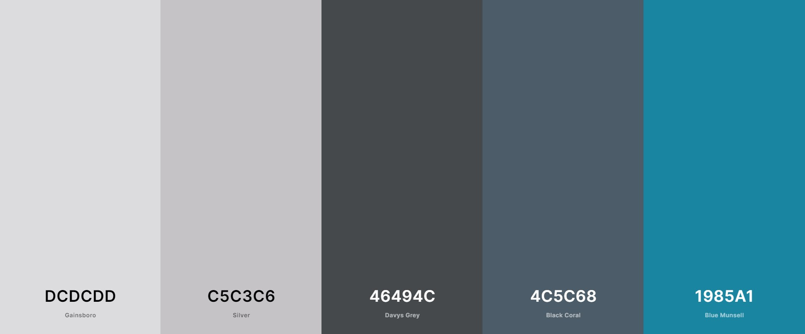
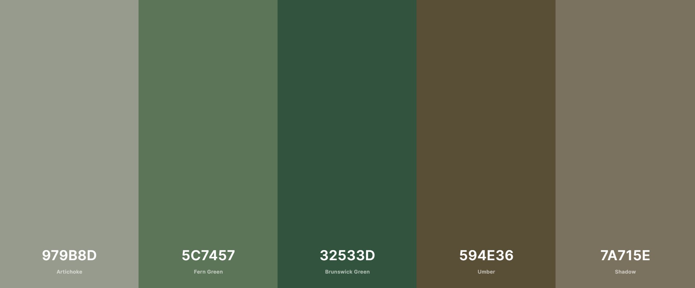

Color Palettes
Color Palette GeneratorHere are three color schemes that could be used for this website.
Color Palette 1:
- Palette 1
- Purpose: Be easy on the eyes, and use red/white to pop out certain things.
- How it fits: The shades of blue will be easy on the eyes and provide enought contrast to show a difference between elements. The red and white will stand out and call the reader's attention while not being to harsh on the eyes.
Color Palette 2:
- Palette 2
- Purpose: Provide a gray scheme with decent contrast.
- How it fits: The gray colors will be nicer than the typical white background, and the shades of blue will give structure to nav and footer elements.
Color Palette 3:
- Palette 3
- Purpose: Earthy color scheme
- How it fits: The browns and greens work well together and remind the reader of the outdoors, which is one of the purposes of this website. It's impossible to know the weather without being reminded of the swaying trees in the summer or the frozen lakes surrounded by evergreens.